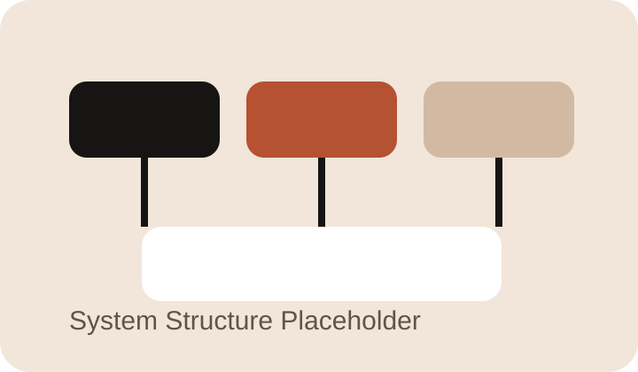

负责竞赛任务分析、系统架构设计、模块功能划分与开发推进，完成从需求理解到整机联调的完整开发流程。
Embedded / Competition
嵌入式系统应用开发
这是一个围绕 CH32H417QEU6、RT-Thread 多任务框架和整机联调能力展开的省赛类项目。 它的核心不是单个模块做出来，而是在竞赛节奏下，把底层驱动、外设控制、通信交互和数据显示有组织地拉通。

项目背景
项目面向江苏省职业院校技能大赛嵌入式系统应用开发赛项，要求在有限时间内完成底层驱动搭建、任务调度组织和整机功能联调。 重点不只是“会写代码”，而是能否在时间压力下完成合理拆分、快速判断问题、稳定推进联调，并把多个外设模块真正整合成可运行系统。
我的职责
承担底层驱动开发、任务整合、外设通信联调以及系统运行阶段的问题定位，并围绕异常数据、任务阻塞和通信不稳定进行优化。
技术与实现
- 基于 CH32H417QEU6 芯片完成底层驱动开发、外设控制与功能模块实现。
- 通过 RT-Thread 组织多任务并发运行，协调传感器采集、通信交互、外设控制和数据显示。
- 围绕 GPIO、串口、定时器、通信模块及显示模块进行驱动适配与联调。
- 通过模块拆分与接口约定降低联调阶段冲突，优先保证整机运行链路完整，再逐步优化稳定性。
图片展示

结果与复盘
这个项目强化了我在竞赛场景下进行模块拆分、任务组织和整机联调的能力，也让我更清楚工程节奏、问题定位和稳定性优化的重要性。 它不是一个只停留在功能实现上的项目，而是一个真正锻炼“工程推进能力”和“系统落地能力”的项目。